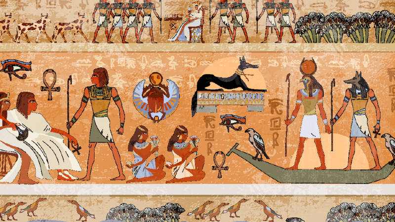

followed prehistoric Egypt and coalesced around 3100 BC (according to conventional Egyptian chronology) with the political unification of Upper and Lower Egypt under Menes (often identified with Narmer).
The history of ancient Egypt occurred as a series of stable kingdoms, separated by periods of relative stability known as Intermediate Periods: the Old Kingdom of the Early Bronze Age, the Middle
Kingdom of the Middle Bronze Age, and the New Kingdom of the Late Bronze Age.

Ancient Civilization: Ancient Egypt was one of the world's earliest and most advanced civilizations, thriving for thousands of years along the banks of the Nile River. The civilization left behind a wealth
of artifacts and structures that provide insights into various aspects of daily life, religion, art, and technology.

Pyramids and Temples: The most iconic Egyptian antiquities are the pyramids of Giza, including the Great Pyramid, which is one of the Seven Wonders of the Ancient World. These monumental structures
served as tombs for pharaohs and were constructed with incredible precision. Temples, such as those in Luxor and Karnak, are also remarkable examples of ancient Egyptian architecture.
Sphinx: The Great Sphinx of Giza is a colossal limestone statue with the body of a lion and the head of a pharaoh, believed to represent Pharaoh Khafre. It stands near the pyramids and is one of the most recognizable
symbols of ancient Egypt.
Valley of the Kings and Queens: The Valley of the Kings on the west bank of the Nile is a burial ground for pharaohs of the New Kingdom. It contains elaborate tombs, including that of Tutankhamun. The nearby Valley
of the Queens houses the tombs of queens and other royal family members.
Hieroglyphs and Papyri: The ancient Egyptians developed a system of writing known as hieroglyphs. Inscriptions on temple walls, monuments, and papyri have provided valuable information about their language, beliefs,
and historical events.
Mummies: The practice of mummification was an integral part of ancient Egyptian funerary rituals. Mummies, preserved bodies of the deceased, have been found in tombs and played a significant role in the belief in the afterlife.
Art and Sculpture: Egyptian art is characterized by its symbolic and stylized representations. Statues, reliefs, and paintings often depicted gods, pharaohs, and scenes from daily life. The use of symbolism was prevalent, and certain symbols carried specific meanings.
Cultural and Religious Significance: Egyptian antiquities have not only archaeological value but also cultural and religious significance. They provide a window into the beliefs, customs, and achievements of an ancient society
that laid the foundation for many aspects of modern civilization. Today, many Egyptian antiquities are housed in museums around the world, including the Egyptian Museum in Cairo. Efforts are ongoing to preserve and protect
these treasures for future generations.